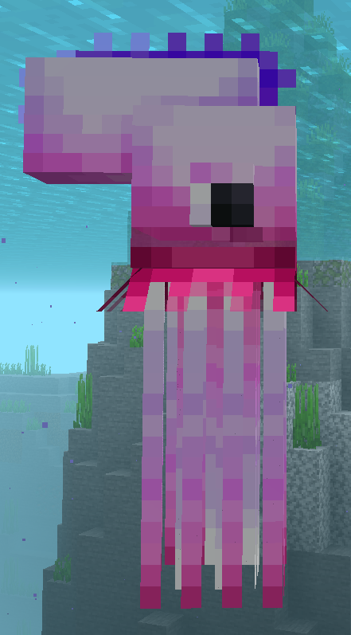
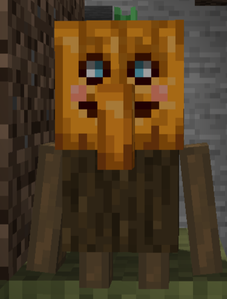
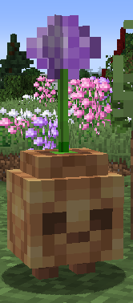

List Of All The Mobs
Man O' War
- Spawns in the Lush Stacks biome

Pumpkin Warden
- Spawns in the Pumpkin Village structure

Oddion
- Spawns in the Allium Shrubland biome

- Spawns in the Lush Stacks biome

- Spawns in the Pumpkin Village structure

- Spawns in the Allium Shrubland biome
